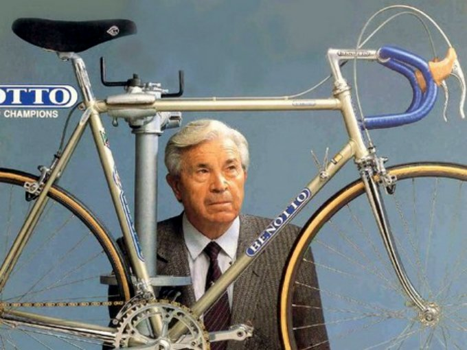

Benotto es una reconocida empresa mexicana dedicada a la fabricación de bicicletas desde 1937. Su historia está llena de éxito y pasión por el ciclismo. Fundada por Giacinto Benotto en Italia, la empresa se trasladó a México en 1948, donde encontró un terreno fértil para crecer.
A lo largo de los años, Benotto ha sido pionera en el desarrollo de tecnologías innovadoras y diseños vanguardistas en la industria de las bicicletas. Sus productos han sido utilizados por ciclistas profesionales en competencias de renombre internacional.
Benotto ha logrado mantenerse como una marca líder en el mercado mexicano, con una amplia gama de bicicletas para todas las edades y estilos de conducción. Su compromiso con la calidad, la durabilidad y la satisfacción del cliente ha sido clave en su éxito continuo.
Además de su presencia en México, Benotto ha expandido su alcance a nivel internacional, exportando sus productos a diferentes países. Su nombre se ha convertido en sinónimo de excelencia en el mundo de las bicicletas.
La historia de Benotto es una historia de pasión por el ciclismo, de innovación constante y de un compromiso inquebrantable con la calidad. A través de los años, ha dejado una huella indeleble en la industria de las bicicletas, inspirando a ciclistas de todas las edades a disfrutar de la emoción y la libertad que ofrece este deporte.